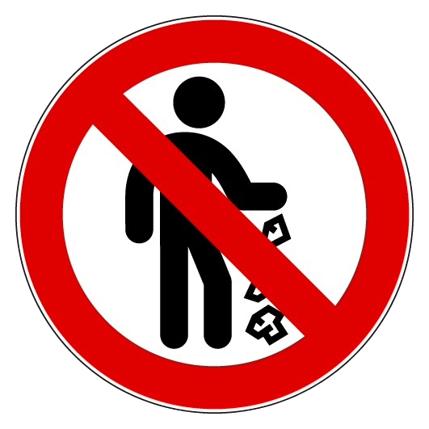

Wichtige Hinweise für Enduro-Fahrer
Das Fahren mit Enduro-Bikes auf ungesichertem Gelände erfordert nicht nur technische Fähigkeiten, sondern auch
das
Wissen um gesetzliche Vorschriften und Sicherheitsmaßnahmen.
Hier findest du wichtige Tipps, gesetzliche Regelungen in Oberösterreich und nützliche Informationen, um dein
Offroad-Erlebnis sicher und verantwortungsbewusst zu gestalten.
Sicherheitsvorkehrungen
- Trage immer Schutzkleidung (Helm, Stiefel, Protektoren).
- Überprüfe dein Motorrad vor jeder Fahrt auf technische Mängel.
- Fahre niemals allein in unbekanntem Gelände.
- Prüfe das Wetter und plane deine Route.
Gesetzliche Regelungen in Oberösterreich
Hier sind einige relevante Punkte, die für Offroad-Fahren in Oberösterreich gelten:
a) Wo darfst du fahren?
- Offroad-Fahren ist auf öffentlichen Straßen, Feldwegen und Wäldern grundsätzlich verboten, wenn keine
ausdrückliche Erlaubnis vorliegt.
- Privatgelände darf nur mit Zustimmung des Eigentümers befahren werden.
- In Schutzgebieten oder Naturschutzgebieten ist Offroad-Fahren strikt untersagt.
b) Strafen bei Verstößen
- Illegales Befahren von Wäldern oder Naturschutzgebieten kann mit Geldstrafen bis zu € 1.500 geahndet
werden.
- Schäden an Naturflächen oder Privatgrundstücken führen oft zu zusätzlichen Schadensersatzforderungen.
c) Zulassung und Versicherung
- Dein Motorrad muss für den Straßenverkehr zugelassen sein, wenn du öffentliche Wege nutzt.
- Eine Haftpflichtversicherung ist verpflichtend.
Respektiere die Umwelt
- Vermeide Lärm in der Nähe von Wohngebieten.
- Hinterlasse keinen Müll.

- Nutze nur legale Offroad-Strecken.